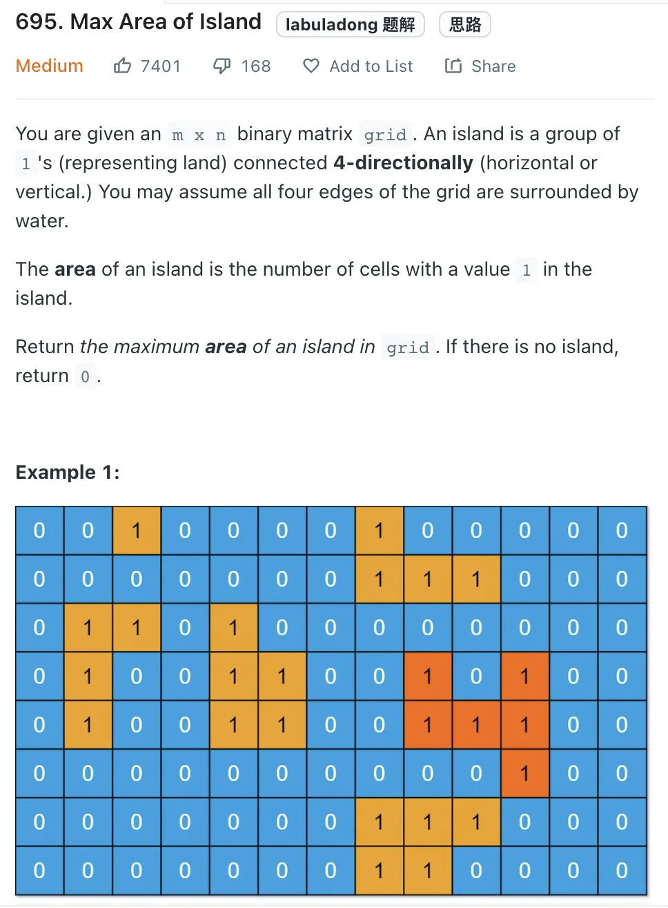
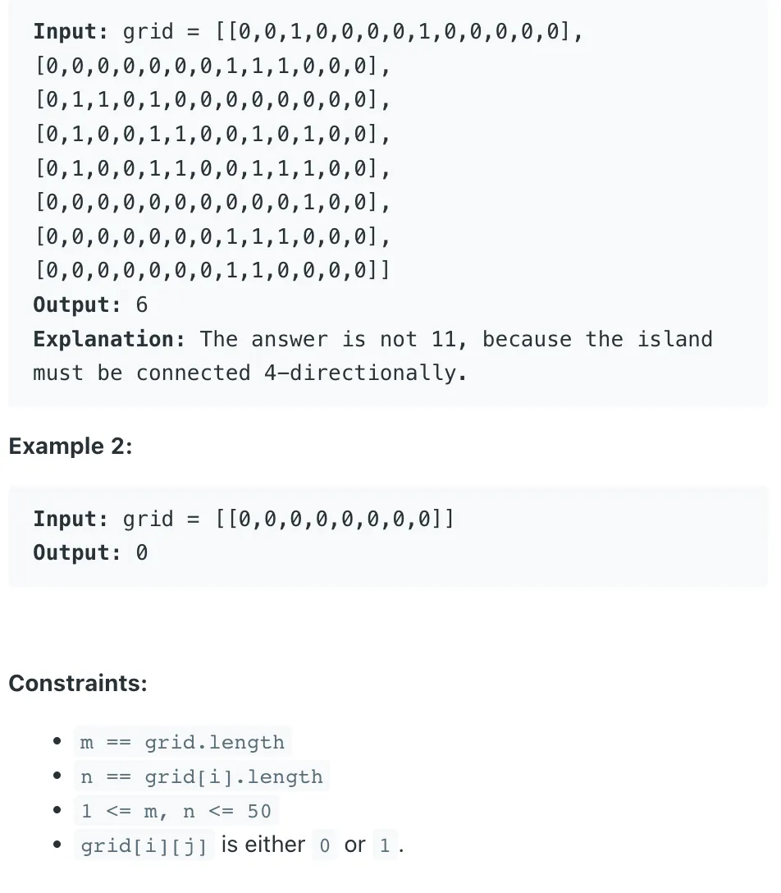

695. Max Area of Island
考過的公司：Amazon、Bytedance、Google
Question


✍🏽 My Solution
Solution #1 [DFS]
Runtime: 2 ms, faster than 100.00% of Java online submissions for Max Area of Island.
Memory Usage: 48 MB, less than 23.76% of Java online submissions for Max Area of Island.
class Solution {
int m;
int n;
public int maxAreaOfIsland(int[][] grid) {
m = grid.length;
n = grid[0].length;
int res = 0;
for (int i = 0; i < m; i++) {
for (int j = 0; j < n; j++) {
if (grid[i][j] == 1) {
res = Math.max(res, dfs(grid, i, j));
}
}
}
return res;
}
private int dfs(int[][] grid, int i, int j) {
if (i >= m || i < 0 || j >= n || j < 0) {
return 0;
}
if (grid[i][j] == 0) return 0;
grid[i][j] = 0;
return dfs(grid, i+1, j)
+ dfs(grid, i, j+1)
+ dfs(grid, i-1, j)
+ dfs(grid, i, j-1) + 1;
}
}
Explanation (in my words)
- How does their solution work?
- 这题的大体思路和 200. 岛屿数量 完全一样，只不过
dfs函数淹没岛屿的同时，还应该想办法记录这个岛屿的面积。我们可以给dfs函数设置返回值，记录每次淹没的陆地的个数
- 这题的大体思路和 200. 岛屿数量 完全一样，只不过
Solution #2 [BFS]
Runtime: 8 ms, faster than 15.10% of Java online submissions for Max Area of Island. Memory Usage: 49.2 MB, less than 10.69% of Java online submissions for Max Area of Island.
class Solution {
int m;
int n;
public int maxAreaOfIsland(int[][] grid) {
m = grid.length;
n = grid[0].length;
int max = 0;
for (int i = 0; i < m; i++) {
for (int j = 0; j < n; j++) {
if (grid[i][j] == 1) {
max = Math.max(max, bfs(grid, i, j));
}
}
}
return max;
}
private int bfs(int[][] grid, int i, int j) {
int ans = 0;
Queue<Integer> queue = new LinkedList<>();
queue.offer(i*n+j);
while (!queue.isEmpty()) {
int cur = queue.poll();
int row = cur / n;
int col = cur % n;
if (grid[row][col] == 0) continue;
++ans;
grid[row][col] = 0;
if ((row+1) < m && grid[row+1][col] == 1) {
queue.offer((row+1)*n+col);
}
if ((col+1) < n && grid[row][col+1] == 1) {
queue.offer(row*n+col+1);
}
if (row > 0 && grid[row-1][col] == 1) {
queue.offer((row-1)*n+col);
}
if (col > 0 && grid[row][col-1] == 1) {
queue.offer(row*n+col-1);
}
}
return ans;
}
}
Explanation (in my words)
- How does their solution work?
- 跟島嶼200題一樣